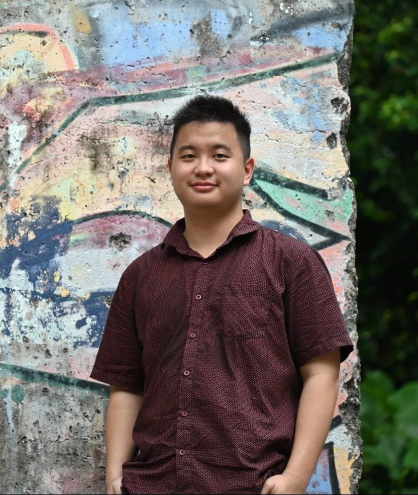
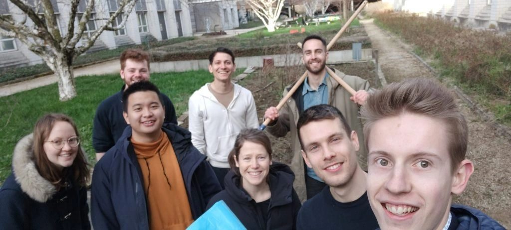
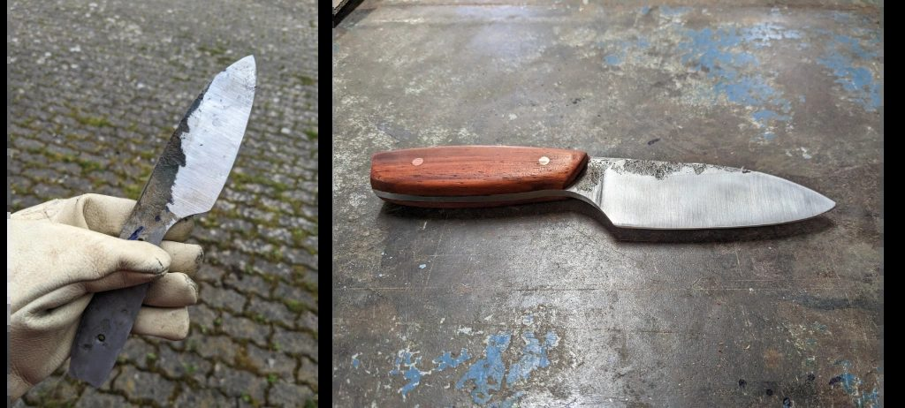
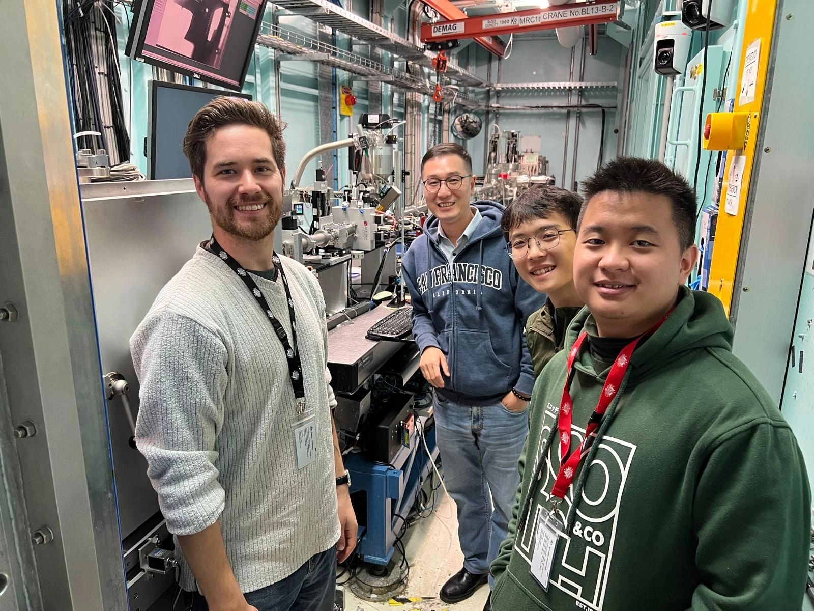
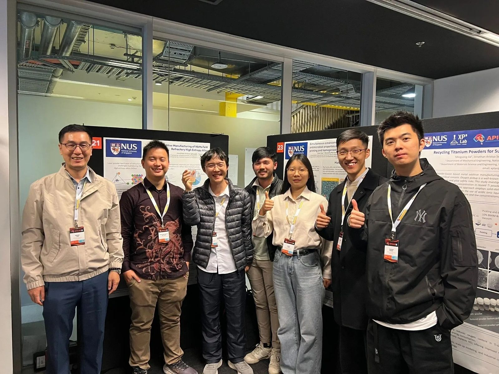
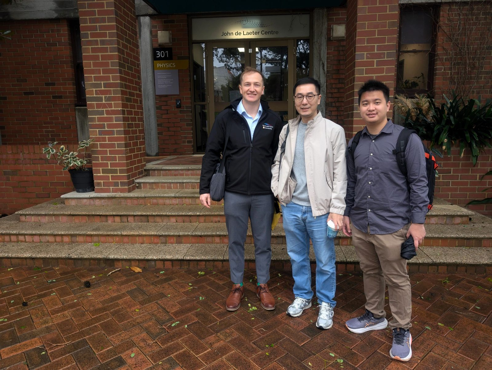
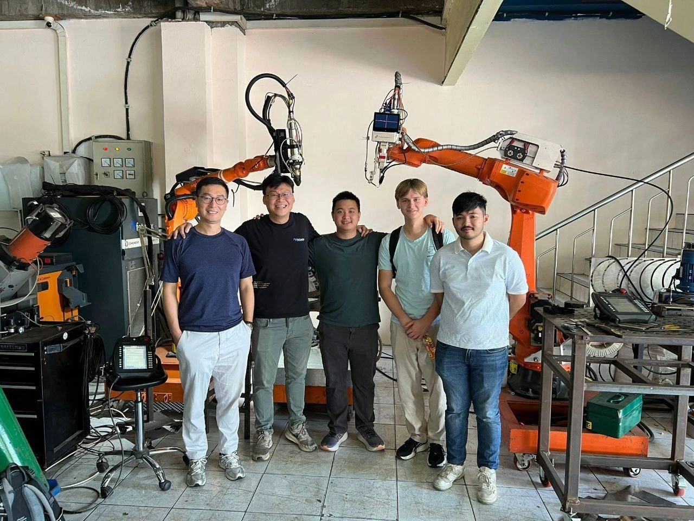

PhD candidate · Materials Science & Engineering, Monash University
Jonathan Aristya Setyadji

NowPhD, Monash University (2026–)
PreviouslyResearch Engineer, NUS Mechanical Engineering
MethodsIn situ EBSD, atom probe, L-PBF
Field notes
Labs, visits and firsts-

Gardening with Andreas’ lab
Worked at EPFL from January to July 2023.
-

Knifemaking with Dimitri
Forging and stock removal with Dimitri from Studio Blade.
-

First synchrotron beamtime
First beamline experience at the Australian Synchrotron with Jinxi and Prof Tan.
-

First academic conference
Attended APICAM 2025 with Prof Tan’s group and presented a poster on additive manufacturing of refractory HEAs.
-

Visiting Curtin’s John de Laeter Centre
Saw their atom probe and additive manufacturing centre, and met Karl.
-

Visiting Laser Indonesia
Visited Tommy and learned about industrial laser systems.